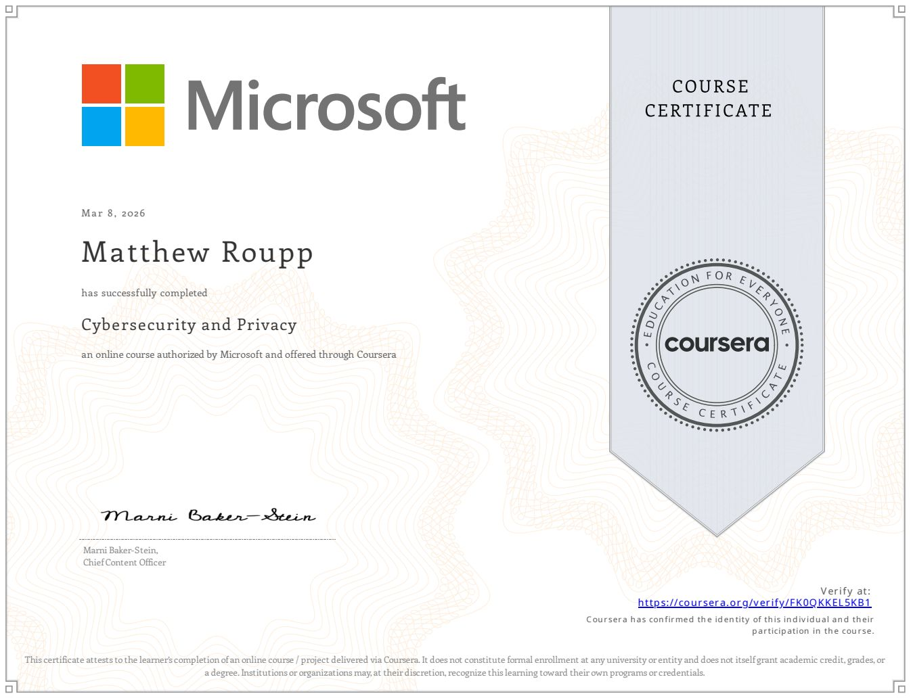
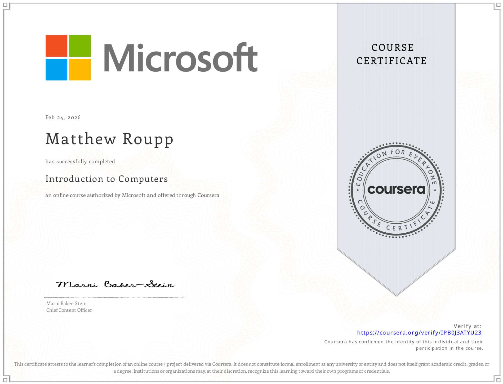
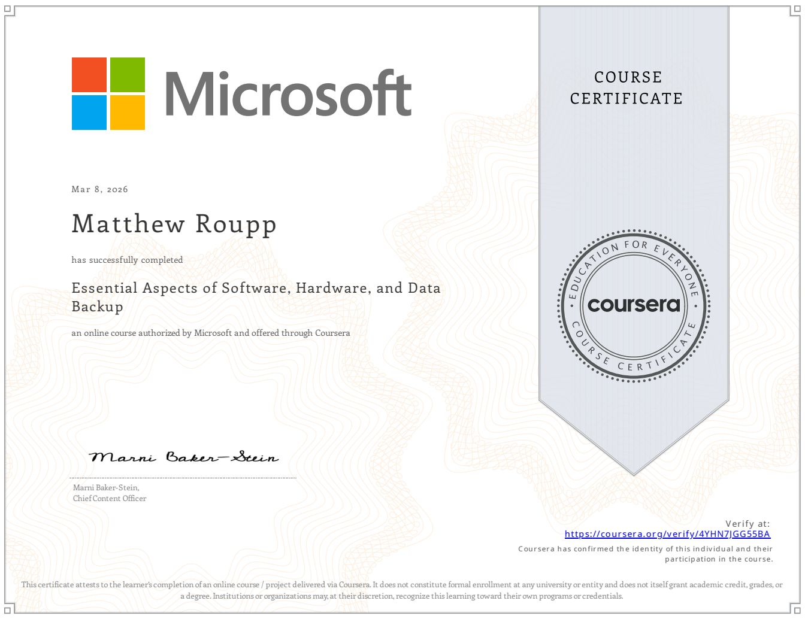
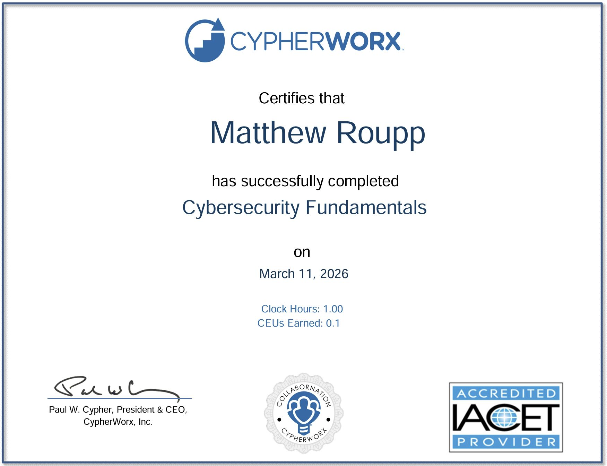
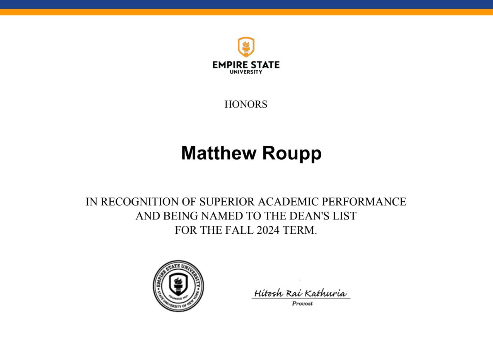
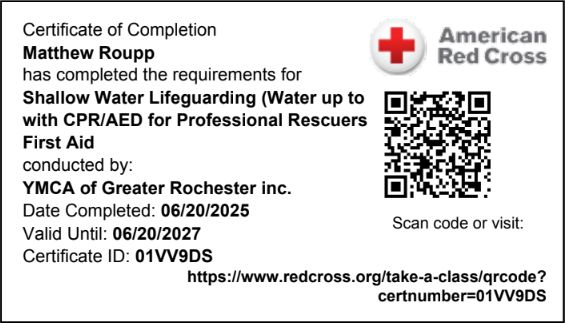
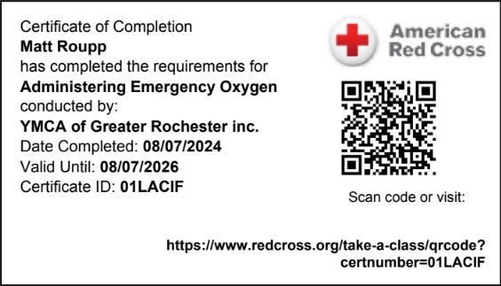

Technical
Coursework and IT-focused certificates that support networking, computing, and cybersecurity growth.
Certifications and training
This page gives my certifications, coursework credentials, and recognitions a proper home. It helps employers, instructors, and visitors quickly see the training behind the work shown throughout the rest of the site.
Technical
Coursework and IT-focused certificates that support networking, computing, and cybersecurity growth.
Professional
Credentials that show responsibility, readiness, and follow-through beyond the classroom.
Personal
A record of how I keep building skills instead of relying on one project or one role alone.
Technical credentials
These entries help show the learning side of my portfolio and the direction I want to keep developing.
Microsoft | 2026
Foundational learning around networking, security concepts, and the role secure systems play in IT environments.

Microsoft | 2026
Coursework focused on privacy, security awareness, and the habits that support safer use of technology.

Microsoft | 2026
A broader computing foundation that supports future work in troubleshooting, systems, and digital services.

Microsoft | 2026
Learning that connects hardware understanding with the software side of how systems operate and are maintained.

CypherWorx | 2026
Additional cybersecurity-focused learning that supports a stronger base in safe technology practices.

Academic recognition | 2024
A strong academic marker that reflects consistency, effort, and continued progress in my studies.
Safety and responsibility

Certification | 2025
Supports the leadership and responsibility side of my background as a full-time head lifeguard.

Certification | 2024
Shows preparedness, quick response training, and comfort in high-responsibility situations.

Certification | 2024
Another credential tied to dependable response, calm decision-making, and practical training.

Certification
Shows formal operational training, accountability, and attention to standards in a professional environment.
Supporting records
Some items fit better as downloadable records than gallery images. This keeps them easy to find.
Why this page matters
That makes the whole website feel more professional. Projects can stay focused on the work, while certifications show training, progress, and proof of continued learning in a clean separate section.